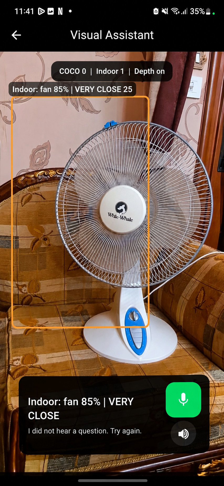
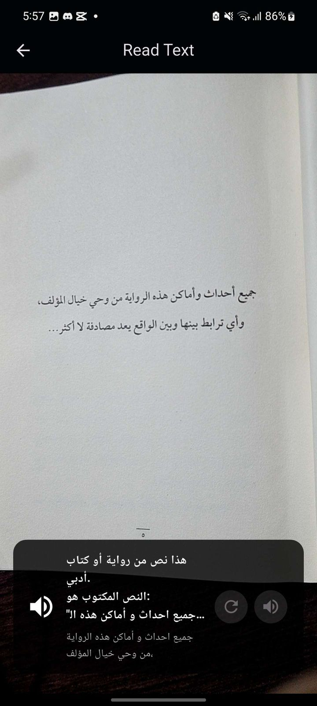

I design and develop AI systems, from training machine learning models to integrating them into applications. My work spans computer vision, natural language processing, and intelligent retrieval, supported by a background in data science.
GRADUATION PROJECT · TEAM PROJECTVISION + LANGUAGE
Lumin
A voice-first assistant for blind and visually impaired users.
Connects camera input with object recognition, relative depth, contextual text reading, and conversational web search. Built with a Flutter Android app and a FastAPI backend, with Egyptian Arabic voice prompts.

Custom indoor detection

Contextual text recognition
IMPLEMENTATION
On-device perception
YOLO detection with TensorFlow Lite exports and a custom 26-class indoor dataset.
Context-aware responses
OCR follow-ups retain extracted text and route to web search when needed.
Voice interface
Wake-word activation, transcription, intent routing, and spoken responses.
Camera + voice→Flutter / YOLO→FastAPI / OCR / MiDaS→Spoken response
Extends the multi-organization chatbot with MCP tools. An LLM client chooses SQL for structured facts, vector retrieval for document questions, and Neo4j for relationship context, while maintaining organization-scoped access.
USER QUERYMCP orchestration
01 / STRUCTUREDPostgreSQL
Named, approved queries for lists, counts, and factual lookups.
02 / SEMANTICVector search
Retrieve relevant document chunks within the organization.
03 / RELATIONSHIPSNeo4j
Enrich answers with entities and relationship context.
An educational platform combining NASA exoplanet data, clustering-based habitability predictions, interactive simulations, and Gemini-powered personalized stories. Cairo local winner and nominated globally.
Developed full-stack AI applications, multi-organization chatbots, and n8n agents. Analyzed customer behavior and robotic faults, then contributed to agent-based retrieval combining structured, unstructured, and graph data.
INTERNSHIP
JUL — AUG 2025
Natural Language Processing
National Telecommunication Institute
Applied text processing, embeddings, and sentiment analysis through hands-on projects.
TRAINING
AUG — SEP 2024
Big Data & AWS Cloud
National Telecommunication Institute
Completed separate programs in the Hadoop ecosystem and cloud computing, covering Spark, Hive, Kafka, virtualization, and AWS architecture.
TRAINING
JUL — AUG 2024
Summer Intern
Commercial International Bank
Studied data literacy, cybersecurity, financial inclusion, and digital transformation in banking.
INTERNSHIP
03 Background
EDUCATION
B.Sc. in Data Science
Cairo University
Faculty of Computer Science & Artificial Intelligence September 2022 — July 2026